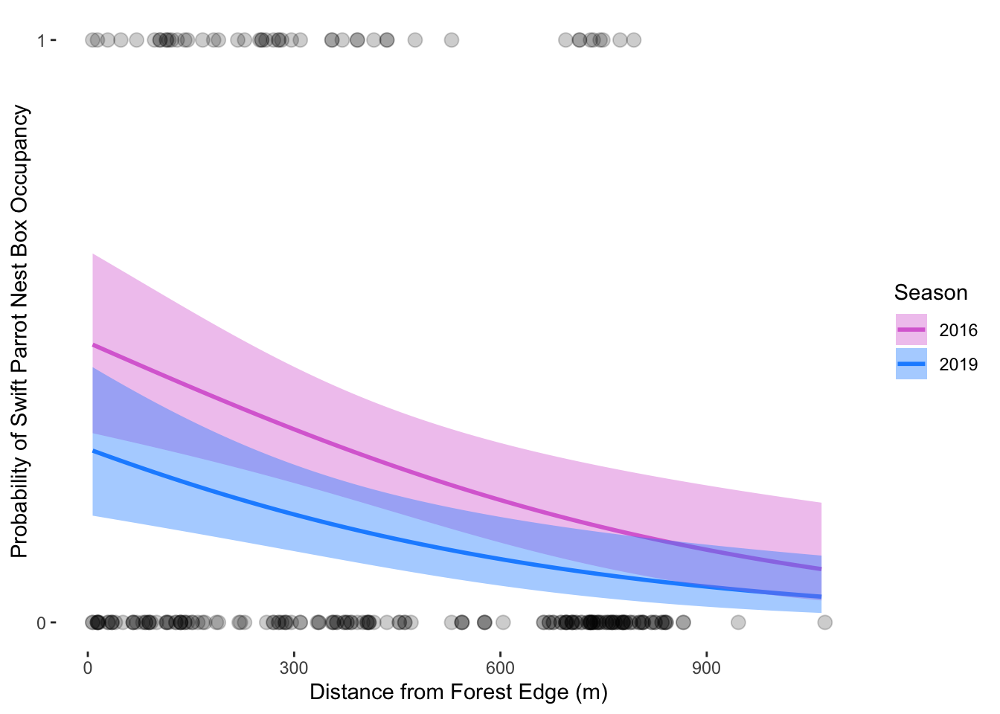

show_col_types = FALSE # hide the columns and codes and messages
sst_clean <- sst |>
mutate(
date = ymd(date),
year = year(date),
month = month(date, label = TRUE, abbr = TRUE)
) |>
filter(year >= 2018, year <= 2023) |>
group_by(year, month) |>
summarize(
mean_monthly_sst = round(mean(temp, na.rm = TRUE), 1),
.groups = "drop"
)
slice_sample(sst_clean, n = 5)Final
[GitHub Repository] (https://github.com/izzy-chang/ENVS-193DS_spring-2025_final)
Problem 1. Research writing
a. Transparent statistical methods
In part 1, they used a simple linear regression. In part 2, they used a one-way ANOVA.
b. More information needed
Post-hoc comparison: The test in part 2 shows there is a difference in average nitrogen load in multiple groups (urban land, atmospheric deposition, fertilizer, wastewater treatment, and grasslands), but it does not specify which specific sources have higher or lower nitrogen loads. Using a post-hoc test, like Tukey’s HSD, would clarify which sources contribute significantly more or less nitrogen to the San Joaquin River Delta.
Effect size and confidence intervals: My co-worker only mentioned p-values in their statements, but more is needed to provide context about the relationships. Reporting an effect size (correlation coefficient r in part 1, eta-squared or Cohen’s d in part 2) and confidence intervals around the means or correlations would provide this valuable context.
c. Suggestions for rewriting
Part 1: We found significant negative correlation between distance from the headwater (km) and annual total nitrogen load (kg/year) in the San Joaquin River Delta, indicating that nitrogen loads tend to decrease farther from the headwater (Pearson’s correlation test: r = [correlation coefficient], p = 0.03, $alpha = [significance level]).
Part 2: Average nitrogen load (kg/year) differed significantly among sources, suggesting that these sources vary in their contributions to nitrogen runoff (one-way ANOVA: F = [test statistic], p = 0.02, $alpha = [significance level]).
COME BACK TO THIS
Problem 2. Data visualization
a. Cleaning and summarizing
show_col_types = FALSE # hide the columns and codes and messages
str(sst_clean)b. Visualize the data
show_col_types = FALSE # hide the columns and codes and messages
color_palette <- setNames(
colorRampPalette(c("lightgreen", "darkgreen"))(6),
as.character(2018:2023)
)
ggplot(sst_clean, aes(
x = month,
y = mean_monthly_sst,
group = factor(year),
color = factor(year)
)) +
geom_line(size = .5) +
geom_point(size = 2) +
scale_color_manual(
values = color_palette,
name = "Year"
) +
labs(
x = "Month",
y = "Mean Monthy Sea Surface Temperature (°C)",
color = "Year"
) +
theme_minimal() +
theme(
legend.position = c(0.1, 0.70),
legend.background = element_rect(fill = "white", color = NA),
panel.border = element_rect(color = "black", fill = NA, size = .5),
panel.background = element_rect(fill = "white", color = NA),
panel.grid.major = element_blank(),
panel.grid.minor = element_blank(),
axis.ticks = element_line(color = "black", size = 0.5)
)Problem 3. Data analysis
show_col_types = FALSE # hide the columns and codes and messages
nest_boxes_clean <- nest_boxes |>
select(box, season, `edge distance`, sp) |>
rename(edge_distance = `edge distance`) |>
mutate(season = as_factor(as.character(season)),
season = fct_relevel(season, "2016", "2019"))
str(nest_boxes_clean)
slice_sample(
nest_boxes_clean,
n = 10
)a. Response variable
The 1s and 0s represent whether a bird occupied a given nest in a season. A 1 means the nest box was occupied and a 0 means it was not occupied. Each column the 1 or 0 appears in represents either a Swift Parrot, Common Starling, or Tree Martin. There is also a column “e” where 1 means empty and 0 means occupied.
b. Purpose of study
The main difference is that Swift Parrots are the target critically endangered species the study aims to protect, whereas Common Starlings and Tree Martins are non-target competitors that may occupy the nest boxes and affect conservation efforts.
c. Difference in “seasons”
The two seasons compared in the study are 2016, when nest boxes were newly deployed, and 2019, after the boxes had been established for three years. These seasons differ in terms of how species responded to the boxes over time. Competitors were more likely to occupy the boxes in 2019, suggesting that long-term box availability may unintentionally favor non-target species.
d. Table of models
4 models total:
| Model number | Season | Distance to Forest Edge | Model description |
|---|---|---|---|
| 0 | no predictors (null model) | ||
| 1 | X | X | all predictors (saturated model) |
| 2 | X | season only | |
| 3 | X | distance to forest edge only |
e. Run the models
show_col_types = FALSE # hide the columns and codes and messages
# model 0: null model
model0 <- glm(sp ~ 1,
family = "binomial",
data = nest_boxes_clean)
# model 1: all predictors
model1 <- glm(sp ~ season + edge_distance,
family = "binomial",
data = nest_boxes_clean)
# model 2: season only
model2 <- glm(sp ~ season,
family = "binomial",
data = nest_boxes_clean)
# model 3: edge distance only
model3 <- glm(sp ~ edge_distance,
family = "binomial",
data = nest_boxes_clean)f. Check the diagnostics
# Model 0 diagnostics
plot(
simulateResiduals(model0)
)
# Model 1 diagnostics
plot(
simulateResiduals(model1)
)
# Model 2 diagnostics
plot(
simulateResiduals(model2)
)
# Model 3 diagnostics
plot(
simulateResiduals(model3)
)Warning in newton(lsp = lsp, X = G$X, y = G$y, Eb = G$Eb, UrS = G$UrS, L = G$L,
: Fitting terminated with step failure - check results carefully
g. Select the best model
show_col_types = FALSE # hide the columns and codes and messages
AICc(model0,
model1,
model2,
model3) |>
arrange(AICc)show_col_types = FALSE # hide the columns and codes and messages
summary(model1)
gtsummary::tbl_regression(model1,
exponentiate = TRUE)The best model as determined by Akaike’s Information Criterion (AIC) was Model 1, or the saturated model with both season and edge distance as predictors.
h. Visualize the model predictions
model1_preds <- ggpredict(model1,
terms = c("edge_distance [7:1072 by=10]", "season"))
ggplot(nest_boxes_clean,
aes(x = edge_distance,
y = sp)) +
geom_point(size = 3,
alpha = 0.2) +
geom_line(data = model1_preds,
aes(x = x,
y = predicted,
color = group),
size = 1) +
geom_ribbon(data = model1_preds,
aes(x = x,
y = predicted,
ymin = conf.low,
ymax = conf.high,
fill = group),
alpha = 0.4) +
scale_y_continuous(limits = c(0, 1),
breaks = c(0, 1)) +
scale_color_manual(values = c("2016" = "orchid", "2019" = "dodgerblue")) +
scale_fill_manual(values = c("2016" = "orchid", "2019" = "dodgerblue")) +
labs(x = "Distance from Forest Edge (m)",
y = "Probability of Swift Parrot Nest Box Occupancy",
color = "Season",
fill = "Season") 
i. Write a caption for your figure
Figure 1: Model predictions of Swift Parrot nest box occupancy by distance from forest edge across two seasons. This figure shows model predictions with 95% confidence intervals (shaded ribbons) overlaid with observed data points (dots) for the years 2016 (pink) and 2019 (blue). The x-axis represents the distance from the forest edge in meters, and the y-axis shows the probability of nest box occupancy by Swift Parrots. Predictions were generated from a generalized linear model including season and distance from forest edge as predictors. Data is from Stojanovic, Dejan et al. (2021). Do nest boxes breed the target species or its competitors? A case study of a critically endangered bird [Dataset]. Dryad. https://doi.org/10.5061/dryad.83bk3j9sb
j. Calculate model predictions
ggpredict(model1,
terms = c("edge_distance [0, 900]", "season"))# Predicted probabilities of sp
season: 2016
edge_distance | Predicted | 95% CI
--------------------------------------
0 | 0.48 | 0.33, 0.64
900 | 0.12 | 0.06, 0.24
season: 2019
edge_distance | Predicted | 95% CI
--------------------------------------
0 | 0.30 | 0.18, 0.44
900 | 0.06 | 0.03, 0.13k. Interpret your results
The predicted probability of Swift Parrot nest box occupancy is higher at the forest edge (0m) compared to farther away (900m) in both 2016 and 2019, with occupancy dropping substantially as distance increases. Specifically, occupancy near the forest was estimated at 48% in 2016 and 30% in 2019, while farther from the edge it dropped to 12% and 6%, respectively. This suggests a clear negative relationship between distance from the forest edge and nest box occupancy, consistent across seasons. Biologically, this pattern likely reflects the Swift Parrot’s dependence on forest-edge habitats for nesting, where resources such as food, shelter, and suitable nesting sites are more abundant or accessible. The difference between seasons could be influenced by Common Starlings or Tree Martins taking over the nest boxes.
Problem 4. Affective and exploratory visualizations
a. Comparing visualizations
The two data visualizations I originally made for Homework 2 are very straightforward and compare two variables each, one being a scatter plot comparing thesis time and screen time and the other being a bar chart comparing type of caffeine consumed and thesis time. My affective visualization includes all of the variables from the data I took, including thesis time, screen time, type of caffeine, sleep time, physical activity, and number of classes. There are not representing in a classic bar chart or scatter plot either, some of the variables are represented as just symbols rather than the actual data.
I do not see too many similarities between my visualizations. The bar chart comparing caffeine types and my affective visualization both use different colors to differentiate between the drinks. The scatter plot and my affective visualization compare screen time and thesis time.
The two visualizations from Homework 2 did not have all of my data inputted, so the patterns do seem to be different from my affective visualization. The bar chart showed that I spent the most time on my thesis when I drink coffee, but the affective visualization does not show this relationship. Although, the original scatter plot seems to have a positive correlation between screen time and thesis time and my affective visualization also seems to show that general relationship.
The feedback I got was to incorporate more variables because I originally was just comparing screen time and thesis time, like in my scatter plot from Homework 2. I took this advice and used little symbols to represent my sleep time, physical activity, and number of classes to add more detail to the visualization. This also made the visualization look more like an image rather than just a bar chart.